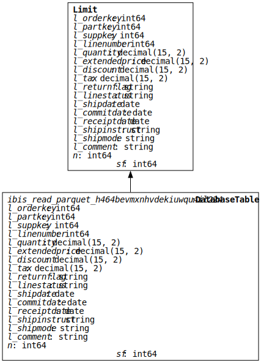
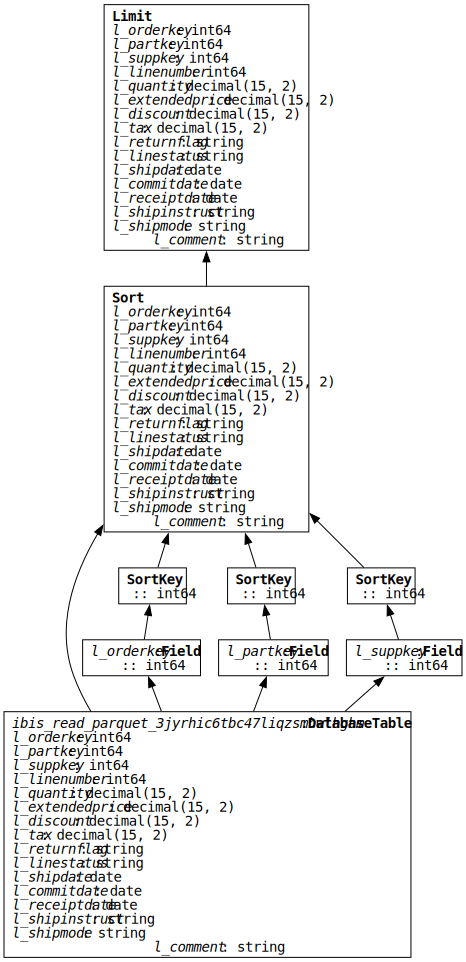

import os
import glob
import ibis
import pandas as pd
import polars as pl
import plotly.express as px
px.defaults.template = "plotly_dark"
ibis.options.interactive = TrueTPC-H benchmark at sf=1024 via DuckDB, DataFusion, and Polars on a MacBook Pro with 96GiB of RAM.
pandas requires your dataframe to fit in memory. Out-of-memory (OOM) errors are common when working on larger datasets, though the corresponding size of data on disk can be surprising. The creator of pandas and Ibis noted in “Apache Arrow and the ‘10 Things I Hate About pandas’”:
To put it simply, we weren’t thinking about analyzing 100 GB or 1 TB datasets in 2011. [In 2017], my rule of thumb for pandas is that you should have 5 to 10 times as much RAM as the size of your dataset. So if you have a 10 GB dataset, you should really have about 64, preferably 128 GB of RAM if you want to avoid memory management problems. This comes as a shock to users who expect to be able to analyze datasets that are within a factor of 2 or 3 the size of their computer’s RAM.
Today with Ibis you can reliably and efficiently process a 1TB dataset on a laptop with <1/10th the RAM.
Important
This represents a 50-100X improvement in RAM requirements for Python dataframes in just 7 years thanks to composable data systems and hard work by the DuckDB team.
Exploring the data with Python dataframes
I’ve generated ~1TB (sf=1024) of TPC-H data on my MacBook Pro with 96 GiB of RAM. We’ll start exploring it with pandas, Polars, and Ibis and discuss where and why they start to struggle.
Generating the data
See the previous post for instructions on generating the data. I used bench gen-data -s 1024 -n 128, partitioning the data to avoid OOM errors while it generated.
I’d recommend instead generating a smaller scale factor and copying it as many times as needed, as generating the data at sf=1024 can take a long time.
To follow along, install the required packages:
pip install pandas 'ibis-framework[duckdb,datafusion]' polars-u64-idx plotly
Why polars-u64-idx?
We need to use polars-u64-idx instead of polars to work with >4.2 billion rows.
Imports and setup:
Let’s check the number of rows across all tables in the TPC-H data:
Show code to get number of rows in TPC-H data
sf = 1024
n = 128
data_dir = f"tpch_data/parquet/sf={sf}/n={n}"
tables = glob.glob(f"{data_dir}/*")
total_rows = 0
for table in tables:
t = ibis.read_parquet(f"{table}/*.parquet")
total_rows += t.count().to_pyarrow().as_py()
print(f"total rows: {total_rows:,}")total rows: 8,867,848,906Over 8.8 billion rows!
We can compute and visualize the sizes of the tables in the TPC-H data (as compressed Parquet files on disk):
Show code to get sizes of tables in TPC-H data
def get_dir_size(path):
from pathlib import Path
return sum(p.stat().st_size for p in Path(path).rglob("*") if p.is_file())
sizes = [get_dir_size(table) for table in tables]
names = [os.path.basename(table) for table in tables]
tmp = ibis.memtable({"name": names, "size": sizes})
tmp = tmp.mutate(size_gb=tmp["size"] / (1024**3))
tmp = tmp.mutate(size_gb_mem=tmp["size_gb"] * 11 / 5)
tmp = tmp.order_by(ibis.desc("size_gb"))
c = px.bar(
tmp,
x="name",
y="size_gb",
title="table sizes in TPC-H data",
hover_data=["size_gb_mem"],
labels={
"name": "table name",
"size_gb": "size (GB on-disk in compressed Parquet files)",
"size_gb_mem": "size (approximate GB in memory)",
},
)
print(
f"total size: {tmp['size_gb'].sum().to_pyarrow().as_py():,.2f}GBs (compressed Parquet files)"
)
ctotal size: 407.40GBs (compressed Parquet files)In-memory this would be about 1TB. Uncompressed CSV files would be >1TB on disk.
Let’s explore the largest table, lineitem. This table in memory is ~6X larger than RAM.
Show code to explore the lineitem table
table_name = "lineitem"
data = f"{data_dir}/{table_name}/*.parquet"
t = ibis.read_parquet(data)
print(f"rows: {t.count().to_pyarrow().as_py():,} | columns: {len(t.columns)}")rows: 6,144,008,876 | columns: 18Over 6 billion rows!
Let’s try to display the first few rows with Ibis, pandas, and Polars:
t = ibis.read_parquet(data)
t.head(3)┏━━━━━━━━━━━━┳━━━━━━━━━━━┳━━━━━━━━━━━┳━━━━━━━━━━━━━━┳━━━━━━━━━━━━━━━━┳━━━━━━━━━━━━━━━━━┳━━━━━━━━━━━━━━━━┳━━━━━━━━━━━━━━━━┳━━━━━━━━━━━━━━┳━━━━━━━━━━━━━━┳━━━━━━━━━━━━┳━━━━━━━━━━━━━━┳━━━━━━━━━━━━━━━┳━━━━━━━━━━━━━━━━━━━┳━━━━━━━━━━━━┳━━━━━━━━━━━━━━━━━━━━━━━━━━━━━━━━━━━━┳━━━━━━━┳━━━━━━━┓ ┃ l_orderkey ┃ l_partkey ┃ l_suppkey ┃ l_linenumber ┃ l_quantity ┃ l_extendedprice ┃ l_discount ┃ l_tax ┃ l_returnflag ┃ l_linestatus ┃ l_shipdate ┃ l_commitdate ┃ l_receiptdate ┃ l_shipinstruct ┃ l_shipmode ┃ l_comment ┃ n ┃ sf ┃ ┡━━━━━━━━━━━━╇━━━━━━━━━━━╇━━━━━━━━━━━╇━━━━━━━━━━━━━━╇━━━━━━━━━━━━━━━━╇━━━━━━━━━━━━━━━━━╇━━━━━━━━━━━━━━━━╇━━━━━━━━━━━━━━━━╇━━━━━━━━━━━━━━╇━━━━━━━━━━━━━━╇━━━━━━━━━━━━╇━━━━━━━━━━━━━━╇━━━━━━━━━━━━━━━╇━━━━━━━━━━━━━━━━━━━╇━━━━━━━━━━━━╇━━━━━━━━━━━━━━━━━━━━━━━━━━━━━━━━━━━━╇━━━━━━━╇━━━━━━━┩ │ int64 │ int64 │ int64 │ int64 │ decimal(15, 2) │ decimal(15, 2) │ decimal(15, 2) │ decimal(15, 2) │ string │ string │ date │ date │ date │ string │ string │ string │ int64 │ int64 │ ├────────────┼───────────┼───────────┼──────────────┼────────────────┼─────────────────┼────────────────┼────────────────┼──────────────┼──────────────┼────────────┼──────────────┼───────────────┼───────────────────┼────────────┼────────────────────────────────────┼───────┼───────┤ │ 1 │ 158913889 │ 7873905 │ 1 │ 17.00 │ 32213.98 │ 0.04 │ 0.02 │ N │ O │ 1996-03-13 │ 1996-02-12 │ 1996-03-22 │ DELIVER IN PERSON │ TRUCK │ to beans x-ray carefull │ 128 │ 1024 │ │ 1 │ 68924498 │ 7484499 │ 2 │ 36.00 │ 54685.80 │ 0.09 │ 0.06 │ N │ O │ 1996-04-12 │ 1996-02-28 │ 1996-04-20 │ TAKE BACK RETURN │ MAIL │ according to the final foxes. qui │ 128 │ 1024 │ │ 1 │ 65228571 │ 3788572 │ 3 │ 8.00 │ 11970.48 │ 0.10 │ 0.02 │ N │ O │ 1996-01-29 │ 1996-03-05 │ 1996-01-31 │ TAKE BACK RETURN │ REG AIR │ ourts cajole above the furiou │ 128 │ 1024 │ └────────────┴───────────┴───────────┴──────────────┴────────────────┴─────────────────┴────────────────┴────────────────┴──────────────┴──────────────┴────────────┴──────────────┴───────────────┴───────────────────┴────────────┴────────────────────────────────────┴───────┴───────┘
df = pd.concat([pd.read_parquet(f) for f in glob.glob(data)], ignore_index=True)
df.head(3)- 1
- Work around lack of reading multiple parquet files in pandas
The Kernel crashed while executing code in the current cell or a previous cell.
Please review the code in the cell(s) to identify a possible cause of the failure.
Click here for more info.
View Jupyter log for further details.df = pl.read_parquet(data)
df.head(3)The Kernel crashed while executing code in the current cell or a previous cell.
Please review the code in the cell(s) to identify a possible cause of the failure.
Click here for more info.
View Jupyter log for further details.df = pl.scan_parquet(data)
df.head(3).collect()
shape: (3, 16)
| l_orderkey | l_partkey | l_suppkey | l_linenumber | l_quantity | l_extendedprice | l_discount | l_tax | l_returnflag | l_linestatus | l_shipdate | l_commitdate | l_receiptdate | l_shipinstruct | l_shipmode | l_comment |
|---|---|---|---|---|---|---|---|---|---|---|---|---|---|---|---|
| i64 | i64 | i64 | i64 | decimal[15,2] | decimal[15,2] | decimal[15,2] | decimal[15,2] | str | str | date | date | date | str | str | str |
| 1 | 158913889 | 7873905 | 1 | 17.00 | 32213.98 | 0.04 | 0.02 | "N" | "O" | 1996-03-13 | 1996-02-12 | 1996-03-22 | "DELIVER IN PERSON" | "TRUCK" | "to beans x-ray carefull" |
| 1 | 68924498 | 7484499 | 2 | 36.00 | 54685.80 | 0.09 | 0.06 | "N" | "O" | 1996-04-12 | 1996-02-28 | 1996-04-20 | "TAKE BACK RETURN" | "MAIL" | " according to the final foxes.… |
| 1 | 65228571 | 3788572 | 3 | 8.00 | 11970.48 | 0.10 | 0.02 | "N" | "O" | 1996-01-29 | 1996-03-05 | 1996-01-31 | "TAKE BACK RETURN" | "REG AIR" | "ourts cajole above the furiou" |
df = pl.scan_parquet(data)
df.head(3).collect(streaming=True)
shape: (3, 16)
| l_orderkey | l_partkey | l_suppkey | l_linenumber | l_quantity | l_extendedprice | l_discount | l_tax | l_returnflag | l_linestatus | l_shipdate | l_commitdate | l_receiptdate | l_shipinstruct | l_shipmode | l_comment |
|---|---|---|---|---|---|---|---|---|---|---|---|---|---|---|---|
| i64 | i64 | i64 | i64 | decimal[15,2] | decimal[15,2] | decimal[15,2] | decimal[15,2] | str | str | date | date | date | str | str | str |
| 1 | 158913889 | 7873905 | 1 | 17.00 | 32213.98 | 0.04 | 0.02 | "N" | "O" | 1996-03-13 | 1996-02-12 | 1996-03-22 | "DELIVER IN PERSON" | "TRUCK" | "to beans x-ray carefull" |
| 1 | 68924498 | 7484499 | 2 | 36.00 | 54685.80 | 0.09 | 0.06 | "N" | "O" | 1996-04-12 | 1996-02-28 | 1996-04-20 | "TAKE BACK RETURN" | "MAIL" | " according to the final foxes.… |
| 1 | 65228571 | 3788572 | 3 | 8.00 | 11970.48 | 0.10 | 0.02 | "N" | "O" | 1996-01-29 | 1996-03-05 | 1996-01-31 | "TAKE BACK RETURN" | "REG AIR" | "ourts cajole above the furiou" |
Ibis, with the default backend of DuckDB, can display the first few rows. Polars (lazy) can too in regular and streaming mode. For lazily computation, an underlying query engine has the opportunity to determine a subset of data to be read into memory that satisfies a given query. For example, to display any three rows from the lineitem table it can just read the first three rows from the first Parquet file in the dataset.
Both pandas and Polars (eager) crash Python as they must load all the data into memory to construct their dataframes. This is expected because the table in memory ~6X larger than our 96GiB of RAM.
Visualize the Ibis expression tree
Show code to visualize the Ibis expression tree
from ibis.expr.visualize import to_graph
to_graph(t.head(3))
Let’s try something more challenging: partially sorting the lineitem table. This forces at least some columns from all rows of data to pass through the query engine to determine the top 3 rows per the specified ordering. Since the data is larger than RAM, only “streaming” engines can handle this. We’ll try with the methods that worked on the previous query and add in the DataFusion backend for Ibis.
ibis.set_backend("duckdb")
t = ibis.read_parquet(data)
t.order_by(t["l_orderkey"], t["l_partkey"], t["l_suppkey"]).head(3)┏━━━━━━━━━━━━┳━━━━━━━━━━━┳━━━━━━━━━━━┳━━━━━━━━━━━━━━┳━━━━━━━━━━━━━━━━┳━━━━━━━━━━━━━━━━━┳━━━━━━━━━━━━━━━━┳━━━━━━━━━━━━━━━━┳━━━━━━━━━━━━━━┳━━━━━━━━━━━━━━┳━━━━━━━━━━━━┳━━━━━━━━━━━━━━┳━━━━━━━━━━━━━━━┳━━━━━━━━━━━━━━━━━━━┳━━━━━━━━━━━━┳━━━━━━━━━━━━━━━━━━━━━━━━━━┳━━━━━━━┳━━━━━━━┓ ┃ l_orderkey ┃ l_partkey ┃ l_suppkey ┃ l_linenumber ┃ l_quantity ┃ l_extendedprice ┃ l_discount ┃ l_tax ┃ l_returnflag ┃ l_linestatus ┃ l_shipdate ┃ l_commitdate ┃ l_receiptdate ┃ l_shipinstruct ┃ l_shipmode ┃ l_comment ┃ n ┃ sf ┃ ┡━━━━━━━━━━━━╇━━━━━━━━━━━╇━━━━━━━━━━━╇━━━━━━━━━━━━━━╇━━━━━━━━━━━━━━━━╇━━━━━━━━━━━━━━━━━╇━━━━━━━━━━━━━━━━╇━━━━━━━━━━━━━━━━╇━━━━━━━━━━━━━━╇━━━━━━━━━━━━━━╇━━━━━━━━━━━━╇━━━━━━━━━━━━━━╇━━━━━━━━━━━━━━━╇━━━━━━━━━━━━━━━━━━━╇━━━━━━━━━━━━╇━━━━━━━━━━━━━━━━━━━━━━━━━━╇━━━━━━━╇━━━━━━━┩ │ int64 │ int64 │ int64 │ int64 │ decimal(15, 2) │ decimal(15, 2) │ decimal(15, 2) │ decimal(15, 2) │ string │ string │ date │ date │ date │ string │ string │ string │ int64 │ int64 │ ├────────────┼───────────┼───────────┼──────────────┼────────────────┼─────────────────┼────────────────┼────────────────┼──────────────┼──────────────┼────────────┼──────────────┼───────────────┼───────────────────┼────────────┼──────────────────────────┼───────┼───────┤ │ 1 │ 2182651 │ 4742652 │ 4 │ 28.00 │ 48539.40 │ 0.09 │ 0.06 │ N │ O │ 1996-04-21 │ 1996-03-30 │ 1996-05-16 │ NONE │ AIR │ s cajole busily above t │ 128 │ 1024 │ │ 1 │ 16009676 │ 649679 │ 6 │ 32.00 │ 50715.84 │ 0.07 │ 0.02 │ N │ O │ 1996-01-30 │ 1996-02-07 │ 1996-02-03 │ DELIVER IN PERSON │ MAIL │ rouches. special │ 128 │ 1024 │ │ 1 │ 24603274 │ 1563281 │ 5 │ 24.00 │ 28224.96 │ 0.10 │ 0.04 │ N │ O │ 1996-03-30 │ 1996-03-14 │ 1996-04-01 │ NONE │ FOB │ the regular, regular pa │ 128 │ 1024 │ └────────────┴───────────┴───────────┴──────────────┴────────────────┴─────────────────┴────────────────┴────────────────┴──────────────┴──────────────┴────────────┴──────────────┴───────────────┴───────────────────┴────────────┴──────────────────────────┴───────┴───────┘

ibis.set_backend("datafusion")
t = ibis.read_parquet(data)
t.order_by(t["l_orderkey"], t["l_partkey"], t["l_suppkey"]).head(3)┏━━━━━━━━━━━━┳━━━━━━━━━━━┳━━━━━━━━━━━┳━━━━━━━━━━━━━━┳━━━━━━━━━━━━━━━━┳━━━━━━━━━━━━━━━━━┳━━━━━━━━━━━━━━━━┳━━━━━━━━━━━━━━━━┳━━━━━━━━━━━━━━┳━━━━━━━━━━━━━━┳━━━━━━━━━━━━┳━━━━━━━━━━━━━━┳━━━━━━━━━━━━━━━┳━━━━━━━━━━━━━━━━━━━┳━━━━━━━━━━━━┳━━━━━━━━━━━━━━━━━━━━━━━━━━┓ ┃ l_orderkey ┃ l_partkey ┃ l_suppkey ┃ l_linenumber ┃ l_quantity ┃ l_extendedprice ┃ l_discount ┃ l_tax ┃ l_returnflag ┃ l_linestatus ┃ l_shipdate ┃ l_commitdate ┃ l_receiptdate ┃ l_shipinstruct ┃ l_shipmode ┃ l_comment ┃ ┡━━━━━━━━━━━━╇━━━━━━━━━━━╇━━━━━━━━━━━╇━━━━━━━━━━━━━━╇━━━━━━━━━━━━━━━━╇━━━━━━━━━━━━━━━━━╇━━━━━━━━━━━━━━━━╇━━━━━━━━━━━━━━━━╇━━━━━━━━━━━━━━╇━━━━━━━━━━━━━━╇━━━━━━━━━━━━╇━━━━━━━━━━━━━━╇━━━━━━━━━━━━━━━╇━━━━━━━━━━━━━━━━━━━╇━━━━━━━━━━━━╇━━━━━━━━━━━━━━━━━━━━━━━━━━┩ │ int64 │ int64 │ int64 │ int64 │ decimal(15, 2) │ decimal(15, 2) │ decimal(15, 2) │ decimal(15, 2) │ string │ string │ date │ date │ date │ string │ string │ string │ ├────────────┼───────────┼───────────┼──────────────┼────────────────┼─────────────────┼────────────────┼────────────────┼──────────────┼──────────────┼────────────┼──────────────┼───────────────┼───────────────────┼────────────┼──────────────────────────┤ │ 1 │ 2182651 │ 4742652 │ 4 │ 28.00 │ 48539.40 │ 0.09 │ 0.06 │ N │ O │ 1996-04-21 │ 1996-03-30 │ 1996-05-16 │ NONE │ AIR │ s cajole busily above t │ │ 1 │ 16009676 │ 649679 │ 6 │ 32.00 │ 50715.84 │ 0.07 │ 0.02 │ N │ O │ 1996-01-30 │ 1996-02-07 │ 1996-02-03 │ DELIVER IN PERSON │ MAIL │ rouches. special │ │ 1 │ 24603274 │ 1563281 │ 5 │ 24.00 │ 28224.96 │ 0.10 │ 0.04 │ N │ O │ 1996-03-30 │ 1996-03-14 │ 1996-04-01 │ NONE │ FOB │ the regular, regular pa │ └────────────┴───────────┴───────────┴──────────────┴────────────────┴─────────────────┴────────────────┴────────────────┴──────────────┴──────────────┴────────────┴──────────────┴───────────────┴───────────────────┴────────────┴──────────────────────────┘

df = pl.scan_parquet(data)
(
df.sort(pl.col("l_orderkey"), pl.col("l_partkey"), pl.col("l_suppkey"))
.head(3)
.collect()
)The Kernel crashed while executing code in the current cell or a previous cell.
Please review the code in the cell(s) to identify a possible cause of the failure.
Click here for more info.
View Jupyter log for further details.
df = pl.scan_parquet(data)
(
df.sort(pl.col("l_orderkey"), pl.col("l_partkey"), pl.col("l_suppkey"))
.head(3)
.collect(streaming=True)
)PanicException: called `Result::unwrap()` on an `Err` value: "SendError(..)"See GitHub issue.

Visualize the Ibis expression tree
Show code to visualize the Ibis expression tree
from ibis.expr.visualize import to_graph
to_graph(t.order_by(t["l_orderkey"], t["l_partkey"], t["l_suppkey"]).head(3))
Ibis with the DuckDB and DataFusion backends complete this in about 2 minutes each. Polars (lazy) crashes the kernel after about 2 minutes with its default mode and panics in streaming mode.
Streaming is an overloaded term here. In the context of Ibis, a streaming backend refers to a near real-time data processing engine like Apache Flink or RisingWave. In the context of Polars, streaming is a separate engine from the default that can handle larger-than-memory data. This general paradigm is already used by DuckDB and DataFusion, hence their ability to complete the above query. The Polars team does not recommend using their current streaming engine for benchmarking and has announced a new version of their streaming engine.
As we’ll see in the benchmark result, some queries will fail to complete with Polars and DataFusion. These queries are killed by the operating system due to a lack of memory.
Sampling large datasets with Ibis
If we want to work with pandas or Polars dataframes at larger scales, we can use Ibis to sample or filter the data (and perform any other operations) with computation pushed to a more scalable backend. Then just output the Ibis dataframe to pandas or Polars for downstream use:
t = ibis.read_parquet(data)
df = (
t.sample(fraction=0.0001)
.order_by(t["l_orderkey"], t["l_partkey"], t["l_suppkey"])
.to_pandas()
)
df.head(3)| l_orderkey | l_partkey | l_suppkey | l_linenumber | l_quantity | l_extendedprice | l_discount | l_tax | l_returnflag | l_linestatus | l_shipdate | l_commitdate | l_receiptdate | l_shipinstruct | l_shipmode | l_comment | n | sf | |
|---|---|---|---|---|---|---|---|---|---|---|---|---|---|---|---|---|---|---|
| 0 | 3298 | 29573398 | 6533405 | 3 | 25.00 | 36748.00 | 0.10 | 0.08 | N | O | 1996-06-30 | 1996-05-31 | 1996-07-23 | COLLECT COD | SHIP | s! final pin | 128 | 1024 |
| 1 | 17921 | 67164080 | 604093 | 5 | 21.00 | 23955.33 | 0.07 | 0.00 | N | O | 1998-09-21 | 1998-10-08 | 1998-10-19 | TAKE BACK RETURN | TRUCK | ress requests nag against the slyl | 128 | 1024 |
| 2 | 19270 | 58990671 | 7790672 | 2 | 7.00 | 12311.11 | 0.08 | 0.01 | N | O | 1998-03-17 | 1997-12-20 | 1998-03-18 | TAKE BACK RETURN | TRUCK | boost closely. furiously | 128 | 1024 |
t = ibis.read_parquet(data)
df = (
t.sample(fraction=0.0001)
.order_by(t["l_orderkey"], t["l_partkey"], t["l_suppkey"])
.to_polars()
)
df.head(3)
shape: (3, 18)
| l_orderkey | l_partkey | l_suppkey | l_linenumber | l_quantity | l_extendedprice | l_discount | l_tax | l_returnflag | l_linestatus | l_shipdate | l_commitdate | l_receiptdate | l_shipinstruct | l_shipmode | l_comment | n | sf |
|---|---|---|---|---|---|---|---|---|---|---|---|---|---|---|---|---|---|
| i64 | i64 | i64 | i64 | decimal[15,2] | decimal[15,2] | decimal[15,2] | decimal[15,2] | str | str | date | date | date | str | str | str | i64 | i64 |
| 9639 | 23541025 | 501032 | 2 | 42.00 | 44723.70 | 0.09 | 0.08 | "A" | "F" | 1993-09-24 | 1993-11-16 | 1993-09-27 | "NONE" | "MAIL" | "ses through th" | 128 | 1024 |
| 33153 | 182687032 | 8607033 | 4 | 15.00 | 15148.50 | 0.08 | 0.04 | "N" | "O" | 1997-08-20 | 1997-07-11 | 1997-08-30 | "COLLECT COD" | "REG AIR" | "iously furio" | 128 | 1024 |
| 37284 | 33051969 | 4891973 | 2 | 16.00 | 30708.96 | 0.04 | 0.00 | "N" | "O" | 1995-07-10 | 1995-05-16 | 1995-07-22 | "DELIVER IN PERSON" | "AIR" | "ts. even deposits cajole after… | 128 | 1024 |
We can also use this to iterate more quickly on a subset of data with Ibis to construct our queries. Once we’re happy with them, we can change one line of code to run them on the full data.
1TB TPC-H benchmark results
Let’s delve into the results of benchmarking ~1TB (sf=1024) TPC-H queries on a laptop.
Not an official TPC-H benchmark
This is not an official TPC-H benchmark. We ran a derivate of the TPC-H benchmark.
Key differences from previous benchmarking
See the prior benchmark post for more details and key considerations. Key differences in this iteration include:
polars-u64-idxwas used instead ofpolars- Some Polars queries were updated
- Parquet files were generated with
n=128partitions- this was done to avoid OOM errors when generating the data
- this should have little impact on the query execution time
- Queries 18 and 21 for Polars, 9 and 18 for DataFusion were skipped
- they ran for a very long time without completing or failing
- the prior benchmark indicates these queries would likely eventually fail
The Python package versions used were:
ibis-framework==9.1.0datafusion==38.0.1duckdb==1.0.0polars-u64-idx==1.0.0
The three systems tested were:
ibis-duckdb: Ibis dataframe code on the DuckDB backendibis-datafusion: Ibis dataframe code on the DataFusion backendpolars-lazy: Polars (lazy API) dataframe code
To follow along, install the required packages:
pip install 'ibis-framework[duckdb]' gcsfs plotly great-tablesThe code for reading and analyzing the data is collapsed below.
Show code to read and analyze the benchmark data
import ibis
import gcsfs
import plotly.express as px
from great_tables import GT, md
px.defaults.template = "plotly_dark"
ibis.set_backend("duckdb")
ibis.options.interactive = True
ibis.options.repr.interactive.max_rows = 3
fs = gcsfs.GCSFileSystem()
ibis.get_backend().register_filesystem(fs)
t = (
ibis.read_parquet(
"gs://ibis-bench/1tbc/cache/file_id=*.parquet",
)
.select(
"system",
"sf",
"n_partitions",
"query_number",
"execution_seconds",
"timestamp",
)
.mutate(timestamp=ibis._["timestamp"].cast("timestamp"))
.order_by("system", "query_number")
.cache()
)
systems = sorted(t.distinct(on="system")["system"].collect().to_pyarrow().as_py())
agg = (
t.mutate(
run_num=ibis.row_number().over(
group_by=["system", "sf", "n_partitions", "query_number"],
order_by=["timestamp"],
)
)
.relocate(t.columns[:4], "run_num")
.group_by("system", "query_number", "run_num")
.agg(execution_seconds=ibis._["execution_seconds"].mean())
.order_by("system", "query_number", "run_num")
)
agg2 = (
agg.group_by("system", "query_number")
.agg(avg_execution_seconds=agg.execution_seconds.mean().round(2))
.order_by("system", "query_number")
)
piv = agg2.pivot_wider(
names_from="system", values_from=["avg_execution_seconds"]
).order_by("query_number")
def x_vs_y(piv, x, y):
return ibis.ifelse(
piv[x] < piv[y],
-1,
1,
) * (
(
(piv[x] - piv[y])
/ ibis.ifelse(
piv[y] > piv[x],
piv[x],
piv[y],
)
).abs()
).round(4)
comparisons = [
("ibis-datafusion", "ibis-duckdb"),
("polars-lazy", "ibis-datafusion"),
("polars-lazy", "ibis-duckdb"),
]
comparisons = {f"{x}_v_{y}": x_vs_y(piv, x, y) for x, y in comparisons}
piv2 = piv.mutate(**comparisons)
piv2 = piv2.order_by("query_number").relocate("query_number", systems)
agg3 = (
agg2.group_by("system")
.agg(
queries_completed=agg2["avg_execution_seconds"].count(),
execution_seconds=agg2["avg_execution_seconds"].sum().round(2),
seconds_per_query=agg2["avg_execution_seconds"].mean().round(2),
)
.order_by(ibis.desc("queries_completed"))
)
agg3┏━━━━━━━━━━━━━━━━━┳━━━━━━━━━━━━━━━━━━━┳━━━━━━━━━━━━━━━━━━━┳━━━━━━━━━━━━━━━━━━━┓ ┃ system ┃ queries_completed ┃ execution_seconds ┃ seconds_per_query ┃ ┡━━━━━━━━━━━━━━━━━╇━━━━━━━━━━━━━━━━━━━╇━━━━━━━━━━━━━━━━━━━╇━━━━━━━━━━━━━━━━━━━┩ │ string │ int64 │ float64 │ float64 │ ├─────────────────┼───────────────────┼───────────────────┼───────────────────┤ │ ibis-duckdb │ 22 │ 1448.42 │ 65.84 │ │ ibis-datafusion │ 17 │ 1182.23 │ 69.54 │ │ polars-lazy │ 13 │ 1995.16 │ 153.47 │ └─────────────────┴───────────────────┴───────────────────┴───────────────────┘
ibis-duckdb completed all 22/22 queries in under 30 minutes. If you need to run batch data jobs on a similar amount of data, a laptop might be all you need!
ibis-datafusion only completed 17/22 queries, though recall 3 are failing due to a bug that’s already been fixed. A new Python release for DataFusion hasn’t been made yet, so we ran with the old version. Assuming those queries would complete, only 2 queries would be failing due to lack of memory. More investigation would be needed to determine the work needed for all 22 queries to pass under these conditions.
polars-lazy only completed 13/22 queries, with 8 failing due lack of memory. The new streaming engine will likely help with this.
Let’s plot execution time for each query and system:
You can de-select systems in the legend
It might be easier to look at 2 systems at a time. You can click on a system in the legend of the plot to de-select it.
Show code to plot execution time by query and system
c = px.bar(
agg2,
x="query_number",
y="avg_execution_seconds",
title="Average execution time by query",
color="system",
barmode="group",
log_y=True,
)
cLet’s show a Great Tables table of pivoted data including relative speed differences between the systems:
Show code to create Great Table table from pivoted aggregated benchmark data
color_palette = "plasma"
na_color = "black"
style_color = "cyan"
tbl = (
GT(
piv2.mutate(**{" ": ibis.literal("")})
.select(
"query_number",
*systems,
" ",
*list(comparisons.keys()),
)
.to_polars()
)
.opt_stylize(
style=1,
color=style_color,
)
.tab_header(
title=md("1TB (`sf=1024`) TPC-H queries"),
subtitle=md("*on a laptop* (MacBook Pro | Apple M2 Max | 96GiB RAM)"),
)
.tab_spanner(label="execution time (seconds)", columns=systems)
.tab_spanner(label=" ", columns=" ")
.tab_spanner(label="relative speed difference†", columns=list(comparisons))
.tab_source_note(
source_note=md(
"†[Relative speed difference formula](https://docs.coiled.io/blog/tpch#measurements), with negative values indicating A was faster than B for A_v_B"
)
)
.tab_source_note(
source_note=md(
"Benchmark results source data (public bucket): `gs://ibis-bench/1tbc/cache/file_id=*.parquet`"
)
)
.fmt_percent(list(comparisons), decimals=2, scale_values=True)
.data_color(
columns=systems,
domain=[0, agg2["avg_execution_seconds"].max().to_pyarrow().as_py()],
palette=color_palette,
na_color=na_color,
)
.data_color(
columns=" ",
palette=["#333333", "#333333"],
)
.data_color(
columns=list(comparisons),
domain=[
min(
[piv2[c].min().to_pyarrow().as_py() for c in list(comparisons)],
),
max(
[piv2[c].max().to_pyarrow().as_py() for c in list(comparisons)],
),
],
palette=color_palette,
na_color=na_color,
)
)
tbl1TB (sf=1024) TPC-H queries |
|||||||
|---|---|---|---|---|---|---|---|
| on a laptop (MacBook Pro | Apple M2 Max | 96GiB RAM) | |||||||
| query_number | execution time (seconds) | relative speed difference† | |||||
| ibis-datafusion | ibis-duckdb | polars-lazy | ibis-datafusion_v_ibis-duckdb | polars-lazy_v_ibis-datafusion | polars-lazy_v_ibis-duckdb | ||
| 1 | 87.67 | 77.45 | None | 13.20% | None | None | |
| 2 | 8.68 | 7.38 | 9.44 | 17.62% | 8.76% | 27.91% | |
| 3 | 50.43 | 48.72 | None | 3.51% | None | None | |
| 4 | 34.81 | 33.29 | 73.72 | 4.57% | 111.78% | 121.45% | |
| 5 | 61.43 | 51.99 | None | 18.16% | None | None | |
| 6 | 33.05 | 33.8 | 79.69 | −2.27% | 141.12% | 135.77% | |
| 7 | 90.75 | 102.99 | 305.02 | −13.49% | 236.11% | 196.16% | |
| 8 | 72.98 | 62.05 | None | 17.61% | None | None | |
| 9 | None | 116.41 | None | None | None | None | |
| 10 | 75.63 | 58.34 | 262.09 | 29.64% | 246.54% | 349.25% | |
| 11 | 22.25 | 10.22 | 25.31 | 117.71% | 13.75% | 147.65% | |
| 12 | 54.09 | 46.86 | 126.77 | 15.43% | 134.37% | 170.53% | |
| 13 | 60.72 | 48.57 | None | 25.02% | None | None | |
| 14 | 40.06 | 38.79 | 101.46 | 3.27% | 153.27% | 161.56% | |
| 15 | 73.67 | 69.39 | 63.32 | 6.17% | −16.35% | −9.59% | |
| 16 | None | 9.48 | 10.93 | None | None | 15.30% | |
| 17 | 252.67 | 54.44 | None | 364.13% | None | None | |
| 18 | None | 350.98 | None | None | None | None | |
| 19 | 79.78 | 64.85 | 422.94 | 23.02% | 430.13% | 552.18% | |
| 20 | 83.56 | 41.18 | 498.25 | 102.91% | 496.28% | 1,109.93% | |
| 21 | None | 110.43 | None | None | None | None | |
| 22 | None | 10.81 | 16.22 | None | None | 50.05% | |
| †Relative speed difference formula, with negative values indicating A was faster than B for A_v_B | |||||||
Benchmark results source data (public bucket): gs://ibis-bench/1tbc/cache/file_id=*.parquet |
|||||||
You can use the code above to further explore and visualize the results.
Why does this matter?
The ability to run all 1TB TPC-H queries on a relatively standard laptop with minimal setup represents a significant shift in the Python data ecosystem that benefits individual data practitioners and organizations.
Scale up, then scale out
Distributed systems are hard and introduce complexity for data workloads. While distributed OLAP query engines have their place, the threshold for considering them against a single-node OLAP query engine has been raised drastically over the last few years. You can see how much DuckDB has improved over the years and it shows in this benchmark.
It’s a good idea to start with a single node and see how far you can get. You’ll need to consider the tradeoffs for your own situation to make a decision. With Ibis, you can write your queries once and try them on different engines to see which is best for your workload.
Composable data systems are here
Ibis separates the query from the engine. It translates dataframe code into an intermediate representation (IR) in the backend’s native language – often SQL, sometimes other Python dataframe code. This separation allows you to use a single dataframe API for the best engine(s) across your workload(s).
If you need to analyze data in Postgres, you can use Ibis. If you need to speed that up with DuckDB, you can use Ibis. If you need to scale out with Dask or PySpark or Trino, you can use Ibis. If you need to scale out on distributed GPUs you can use Ibis. If another query engine comes along and is best for your workload, you can probably use Ibis. New backends are fairly easy to add!
It’s efficient
How much money does your organization spend on data transformation per terabyte? Using the GCP pricing calculator we’ll sample the monthly cost of some cloud instances including a few TBs of solid-state hard drive space. Hover over to see the vCPUs and RAM for each instance.
Show code to plot monthly cost of various GCP instances
data = {
"m1-megamem-40": {"vCPUs": 40, "RAM": 961, "cost": 6200},
"m1-ultramem-80": {"vCPUs": 80, "RAM": 1922, "cost": 10900},
"m1-ultramem-160": {"vCPUs": 160, "RAM": 3844, "cost": 20100},
"h3-standard-88": {"vCPUs": 88, "RAM": 352, "cost": 4600},
"c2-standard-30": {"vCPUs": 30, "RAM": 120, "cost": 1600},
"c2-standard-60": {"vCPUs": 60, "RAM": 240, "cost": 2700},
}
t = ibis.memtable(
{
"name": list(data.keys()),
"vCPUs": [v["vCPUs"] for v in data.values()],
"RAM (GBs)": [v["RAM"] for v in data.values()],
"cost": [v["cost"] for v in data.values()],
}
).order_by("cost")
c = px.bar(
t,
x="name",
y="cost",
title="Monthly cost (USD) of various GCP instances",
hover_data=["vCPUs", "RAM (GBs)"],
)
cFor ~$1,600/month we can get a machine with more CPU cores and RAM than the laptop benchmarked in this post. This cost assumes you’re running the machine 24/7 – if you only needed to run a workload similar to the benchmark here, you’d only need to run the machine <1 hour per day using Ibis with the default DuckDB backend. This can serve as a good anchor when evaluating your cost of compute for data.
A composable data system with Python dataframe and SQL user experiences can scale vertically to handle workloads into 10TB+ range with modern single-node OLAP query engines. If you need a distributed query engine or a better single-node query engine for your workload materializes, you can swap them out without changing your queries. However, note that with vertical scaling you’re likely to hit storage or network bottlenecks before compute bottlenecks on real workloads.
Next steps
We’ll follow up on this post once new versions that fix issues or improve performance significantly are released. If you’re interested in getting started with Ibis, see our tutorial.